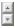

Setting a Time Span to Display
You can have the Marvel Enterprise Portal log data samplings into history files or a database for display in a table or chart. These historical data enabled views have a tool for setting a range of previous data samples to be reported.
Take these steps to broaden the time range of data beyond the current data samplings.
- Open the workspace containing the chart, table, or relational table-based topology view where you want to see historical data.
-
Click
 Time Span the view's toolbar.
Time Span the view's toolbar.
- Select a time frame: Real time plus Last _ Hours (enabled for bar, plot, and area charts only), Last _ Hours (or Days, Weeks, or Months, if the data is warehoused), or Custom.
-
If you selected Last or Custom, specify the range of data:
Detailed data is all the data collected for the agent. Summarized data is data that is aggregated across the specified time frame.
- Set the time frame interval, work shift, and the days. This option is disabled if no data warehouse and summarization schedule were configured for this attribute group.
- To set a custom time frame, click inside the Start Time and End Time fields to open the date editor. Use thespin boxes to adjust the time, year, or month; and click the calendar day. HH:MM:SS AM/PM is initially set to the current time.
-
To apply the time span to all views that use the same query as this
view, select
 Apply to all views associated with this view's query. When
this option is enabled, the query is modified to include the time span
set here, so any other views using this query report the same time
range.
Apply to all views associated with this view's query. When
this option is enabled, the query is modified to include the time span
set here, so any other views using this query report the same time
range.
-
The Timestamp column that is added to the historical view can
show either the global timestamp (the default) or local. SelectUse Hub time
to reflect the time at the Hub Marvel Enterprise Monitoring Server
rather than at the Marvel Enterprise Portal Server or portal
client.
After you click OK, the view shows data from the time span you specified. If the view is a table, a timestamp is displayed as the first column and is accurate to the nearest minute; seconds are displayed as 00.
If you see null as the value of a table cell or chart point, it means that no value was stored in the Marvel Data Warehouse. This happens when values that were identified as invalid are reported from a monitoring agent for a given summarization period.
The sort function is incompatible with the historical reporting feature. If you are
using Time Span to retrieve historical data, the chart
or table is not sorted even if you have specified a sort order in the query. You can
still sort a table by clicking a column heading.
Time Span to retrieve historical data, the chart
or table is not sorted even if you have specified a sort order in the query. You can
still sort a table by clicking a column heading.
After support for an updated product has been applied to the portal server, it is possible to get a request error message about a missing or unknown column name in the view's status bar after you set a time span withUse summarized data selected. Wait until after the next scheduled summarization and pruning procedure has taken place before viewing the summarized data. If need be, you can reschedule summarization and pruning to run sooner.